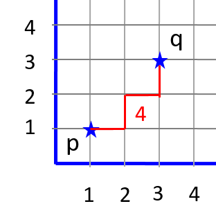
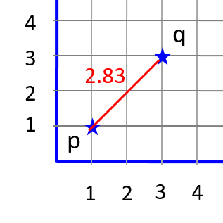
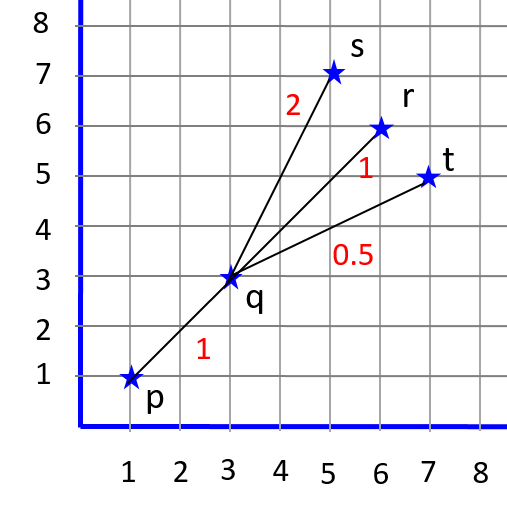

| Prev | Next |
Defining Interactions between Objects
Adding collaborative features
Two or more objects can collaborate with each other to compute some result. For example, two points can interact with each other to compute the distance between them. This can be accomplished by adding methods which takes another Point instance as an argument and working with the attributes of both. In this page, we will look into adding such features.
We will list down the features before discussing the implementation.
- A method to compute the sum of two points.
- A method to determine the slope of a line passing through 2 points.
- A method to determine the distance between 2 points.
- A method to determine the equation of a line passing through 2 points.
- A method to determine the orientation given 3 points.
1. Sum of 2 points
Given points p = (xp,yp) and q = (xq,yq), adding them amounts to adding their respective x and y coordinates. This operation results in a new Point r given by (xp+xq, yp+yq). In the object oriented approach, Point p invokes its sum() method by passing Point q as an argument. The implementation is given below.
/** Add the respective x- and y-coordinates */
public Point sum(Point q) {
return new Point(this.x + q.x, this.y + q.y);
}
How come we accessed q.x and q.y directly? And why did it work?
Defining the attributes as private restricts direct access from objects of different class. In this case, q is also a Point instance and 'this' instance can access private members of another Point instance directly. However, from the Driver class, you will be forced to invoke getX() and getY() to read x and y values.
Implement a driver to test the correct working of sum.
Point p = new Point(7,-3); Point q = new Point(4,10); System.out.println( p.sum(q) );
As an exercise, you can check if p.sum(q) is same as q.sum(p). What do you expect?
2. Slope of a line passing through 2 points
Given points p = (xp,yp) and q = (xq,yq), the slope can be computed by (yq - yp)/(xq - xp). In the object oriented approach, Point p invokes its slope() method by taking Point q as an argument to compute the slope. In other words, Point p collaborates with Point q. Note that the slope() method can return a real number too.
/** 'this' x and y attributes collaborates with
q's x and y to compute the slope */
public double slope(Point q) {
return (q.y - this.y) / (q.x - this.x);
}
Implement a test driver to check its working.
Point p = new Point(4,7); Point q = new Point(1,3); System.out.println( p.slope(q) );
Be sure to test with different values for the coordinates.
- p = (5,8) and q = (3,8)
- p = (5,8) and q = (5,2)
- p = (2,7) and q = (1,3)
Did you observe that each of the above coordinates opens up a new insight?
In the first case, slope is 0. The second one results in division-by-zero and the last one reveals that the decimal part of the slope is chopped off leading to inaccurate result.
This only goes on to emphasize the importance of thorough testing. A full-fledged testing is at least as important as developing the code. As you add each feature, ensure that you test it out thoroughly by backing it up with appropriate test drivers. You don't want the user of your code to run into issues that you did not anticipate in the first place. That is poor coding!!!
The first is not really an issue. The second one can be tackled by a minor check and return 231-1 or -231 depending on positive or negative infinity. The thrid one can be sorted out by type casting the slope value computation (shown below).
public double slope(Point q) {
return (double) (q.y - this.y) / (q.x - this.x);
}
3. Distance between two points
The distance measure that we will use is Manhattan distance which is computed as: |x2 - x1| + |y2 - y1|. It is the number of unit steps required in horizontal and vertical directions to reach from one point to the other.
| Manhattan distance | Euclidean distance | |
|  |  |
Note that Euclidean distance measure is more accurate than Manhattan. But it requires us to compute the square root which is tricky. And we have not reached the stage to use math libraries yet! Manhattan distance requires us to compute absolute value which is not difficult.
We define an auxiliary method absolute() which is made use of by distance() method. The absolute() method takes an integer as input, check if it is negative and if so, multiplies it with -1 and returns it. The distance() method makes use of absolute().
private int absolute(int num) {
// Your code here
}
public int distance(Point q) {
// Your code here
}
Note that we have used the access specifier 'private' for absolute(). This is because absolute() is an internal method and we don't want to expose it to outside world. Computing absolute value is a generic operation and no one is expected to invoke or collaborate with Point object towards this. At the later stage, even we would use Java's math library and this definition is a stop-gap solution until then.
The driver code as follows.
Point p = new Point(2,7); Point q = new Point(-3,1); System.out.println( p.distance(q) );
4. Equation of a line passing through 2 points
Given 2 points, first determine the slope m. With one point (xp,yp) and slope m, the equation of a line can be determined as y - yp = m (x - xp). Re-arranging, the equation can be written down as: y = mx + (yp - m*xp).
To compute m, one can use the slope() method. And y-interecpt c = yp - m * xp can be computed. Note both m and c are double. Then the equation can be printed by concatenating the parts appropriately.
public String equationOfLine(Point q) {
double m = slope(q); // meaning this.slope(q)
double c = this.y - m * this.x; // can also use q.y - m*q.x
System.out.println("y = " + m + "x + " + c);
}
It is a good idea to define a new method yIntercept() which takes slope as an argument and returns c. This can be invoked at line 3 of equationOfLine().
public double yIntercept(double m) { ... }
Implement a test driver to check the correct working.
Point p = new Point(2,7); Point q = new Point(-3,1); System.out.println( p.equationOfLine(q) );
5. Orientation of 3 points
Given 3 points p, q and r sorted by their y-coordinates, we say that p-q-r is oriented clockwise if slope(pq) > slope(qr) and anti-clockwise if slope(pq) < slope(qr). The points are said to be collinear when both the slopes turns out to be the same.
- 
It would be more intuitive to add three methods for checking the orientation rather than a single method which returns one of possible three values (say -1, 0 , 1) since it is not evident what -1 would mean: clockwise or counter-clockwise. Also, in practical settings we would interested in knowing a particular orientation.
Consequently, we add methods isClockwise(), isCounterClockwise() and isCollinear() which return true if the respective condition is satisfied and false otherwise. And each takes two other points as arguments.
public boolean isClockwise(Point q, Point r) {
// Your code here
}
public boolean isCounterClockwise(Point q, Point r) {
// Your code here
}
public boolean isCollinear(Point q, Point r) {
// Your code here
}
A typical test driver code will run as follows. Make sure you test each outcome to check the correct working of all 3 methods.
Point p = new Point(3,-7);
Point q = new Point(-2,0);
Point r = new Point(0,11);
if ( p.isClockwise(q,r) )
System.out.println("Clockwise");
else if ( p.isCounterClockwise(q,r) )
System.out.println("Counter-clockwise");
else
System.out.println("Collinear");
Try these
1. If p.isClockwise(q,r) returns true what would r.isClockwise(q,p) return? Make a guess and then try it out.
2. When would p.isClockwise(q,r) and r.isCounterClockwise(q,p) return the same value?
3. Does it make sense to compute q.isClockwise(p,r)? Why or why not?
A note on Delegation
Consider the isClockwise() method. There are at least two possible ways to implement it.
First approach: We noted above that slope(pq) > slope (qr). This implementation would mean that p collaborates with q to accomplish part of the work (computing slope(pq)) and delegates the other part of the work to q (computing slope(qr)). q collaborates with r to accomplish this work.
Second approach: It is also true that p-q-r are clockwise if slope(pq) > slope(pr). This implementation would mean that p collaborates with q and r independently to accomplish the computation of slope(pq) and slope(pr) without delegation.
Although, the end result is the same, JIVE sequence diagram brings out the distinction succintly. Check it out.
You can think of more functionalities and add appropriate methods. And back it up with the necessary test cases.